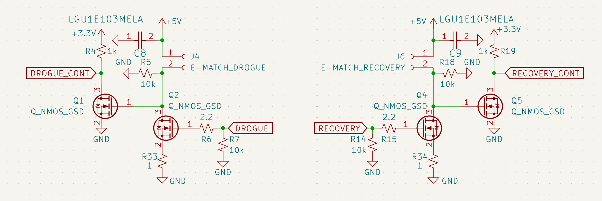

Recovery & Parachute Ignition
Recovery is the most mission-critical aspect of the AFS. The system is designed to handle Drogue and Main deployments with full electrical isolation.
High-Side Switching Logic
In aerospace applications, a grounded chassis can become an unintentional return path. By using high-side switching, we ensure the E-Match is only energized when explicitly commanded.

Figure 7: Primary and Backup high-side MOSFET stages for drogue and main deployment.- Primary Stage: The
DROGUE_CONTsignal triggers the N-MOSFET gate, which pulls the P-MOSFET gate to ground. - Redundancy: The board features Recovery Backup and Drogue Backup circuits. These are independent MOSFET stages that provide a secondary path to ignition in the event of a primary FET failure.
Continuity & Fault Detection
A 1Ω shunt resistor (R33/R34) is placed in series with the deployment loop.
- Pre-Flight: The MCU can pulse the line at low duty-cycle to check for continuity without firing the pyro.
- Post-Fire: The system can verify if the E-Match has successfully cleared the circuit.
Recovery Flowchart: [Insert System Diagram Image Here] Figure 8: .